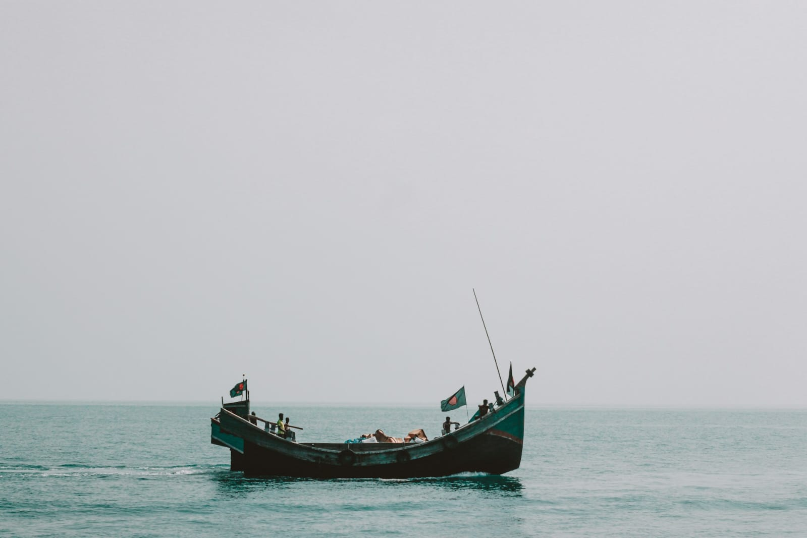

Cox's Bazar & Teknaf • Bangladesh
Cox's Bazar & Teknaf: Where the Sea Meets the Hills, and Every Road Leads to Another Story

There are places you visit because they're famous.
And then there are places that stay with you long after you've left.
For me, Cox's Bazar and Teknaf belong to the second kind.
Most people know Cox's Bazar as the home of the world's longest natural sea beach. They come for the waves, the sunsets, and the endless stretch of golden sand. But I wanted to see more than just the coastline. I wanted to follow the road farther south—to the hills of Teknaf, the Naf River, and the edge of Bangladesh, where another country begins just beyond the water.
Every journey has a destination.
This one had a story.
A Morning by the Bay
The day began before sunrise.

The beach was almost empty, except for a few fishermen pulling in their nets and the gentle rhythm of waves rolling onto the shore.
The horizon slowly transformed from deep blue to shades of orange and gold. For a few quiet moments, the sea and the sky seemed to blend into one endless canvas.
I stood there without saying a word.
Some mornings don't need conversation.
They simply ask you to be present.
As the city gradually came to life behind me, I realized that the beach wasn't just a tourist attraction—it was part of everyday life. Fishermen were returning home, children chased the retreating waves, and small tea stalls welcomed the first customers of the day.
Cox's Bazar wasn't waking up for tourists.
It was waking up for itself.
Following the Road South
Leaving the beach behind, I began my journey toward Teknaf.
The highway connecting Cox's Bazar to the southern tip of Bangladesh is one of the country's most beautiful roads.
On one side, green hills rose gently above the landscape.
On the other, glimpses of the Bay of Bengal appeared between rows of trees.
The farther south I traveled, the quieter everything became.
Small villages replaced busy intersections.
Roadside markets appeared unexpectedly, filled with tropical fruits, fresh vegetables, bamboo products, and locally caught fish.
This part of the journey reminded me of something I've learned over the years:
Sometimes the road itself becomes the destination.
The Hills of Teknaf
By the time I reached Teknaf, the landscape had changed completely.
The hills stood quietly against the sky, covered in dense greenery.
Unlike dramatic mountain ranges, these hills don't demand attention.
They invite patience.
Standing on one of the higher viewpoints, I looked across forests, winding roads, and scattered villages.
Everything seemed peaceful.
Yet life here has always required resilience.
Many communities living in these hills have built their lives in harmony with the landscape, adapting to nature rather than trying to conquer it.
Watching everyday life unfold here reminded me that simplicity often requires the greatest strength.
Life Along the Hills
Travel isn't only about landscapes.
It's about people.
The hill communities around Teknaf live close to nature.
Homes stand on elevated ground.
Children walk narrow paths between villages.
Markets fill with fresh produce gathered from nearby farms and forests.
Daily life moves at a pace very different from the cities I know.
There is no unnecessary rush.
No endless noise.
Only the quiet rhythm of ordinary life.
The more I traveled, the more I understood that every region of Bangladesh carries its own unique identity.
The hills speak a different language than the plains.
Not through words—
but through the way people live.
At the Edge of Bangladesh
Eventually, I found myself standing near the Naf River.
On the opposite bank lay another country.
It was a strange feeling.
The distance was so short that the hills across the river seemed almost within reach.
Yet between us existed an invisible international border.
Watching the calm river flow between two nations made me think about how nature ignores the boundaries we create.
The river doesn't know where one country ends and another begins.
It simply continues its journey.
Perhaps there is something we can learn from that.
The Taste of the Coast
No journey through Cox's Bazar and Teknaf feels complete without experiencing the local seafood.
Freshly caught fish.
Grilled prawns.
Crab.
Pomfret.
Simple meals prepared with ingredients that had likely come from the sea only hours earlier.
Travel has taught me that food is more than flavor.
It is geography.
Climate.
Culture.
History served on a plate.
Every meal tells the story of the place it comes from.
Sunset at the Southern Frontier
As evening approached, warm golden light settled across the hills and the river.
Fishing boats slowly made their way home.
The breeze carried the scent of saltwater through the quiet air.
For a long time, I stood there without reaching for my camera.
Not because the view wasn't beautiful—
but because some moments deserve to be remembered through feeling rather than photographs.
The Road Back
Leaving Teknaf, I kept looking out of the window.
The hills gradually disappeared behind me.
The coastline returned.
The road carried me north once again.
But something had changed.
Travel often changes our destination very little.
Instead, it changes the traveler.
Cox's Bazar reminded me of the endless beauty of the sea.
Teknaf reminded me that even at the edge of a country, life continues with quiet dignity, resilience, and hope.
Perhaps that's why I love traveling.
Not because it helps me escape from life—
but because it helps me understand it.
Some journeys end where the road ends.
The best ones continue long after you've returned home.